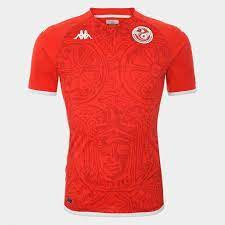
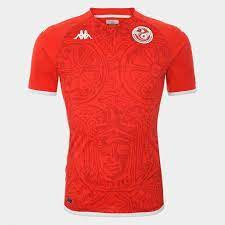

.jpg) 

L'équipe de Tunisie de football (arabe : منتخب تونس لكرة القدم) est l'équipe nationale représentant la Tunisie dans le football international masculin depuis son premier match en 1957.
Elle est régie par la Fédération tunisienne de football, fondée après l'indépendance du pays en 1956.
L'équipe connaît des périodes régulières de représentation au plus haut niveau international : de 1962 à 1978, de 1994 à 2008 et à nouveau à partir de 2014.
Elle participe à trois grandes compétitions quadriennales de football : phases finales de cinq coupes du monde, 20 coupes d'Afrique des nations et quatre tournois olympiques de football.
Elle est la première équipe africaine à remporter un match de coupe du monde en 1978 en battant le Mexique (3-1) ; ils tiennent également tête au champion en titre, l'Allemagne de l'Ouest, avec un match nul, avant d'être éliminés.
Par la suite, ils se qualifient pour trois coupes du monde consécutives, en 1998, 2002 et 2006, avant de revenir lors de l'édition en 2018.
La Tunisie a remporté une coupe d'Afrique des nations en tant que pays hôte du tournoi en 2004. Elle est également finaliste en 1965 en tant que pays hôte et en 1996 en Afrique du Sud.
Elle ne parvient toutefois pas à répondre aux mêmes attentes en dehors du continent africain.
Bien qu'elle ait participé à quatre Jeux olympiques et cinq coupes du monde, les Tunisiens n'ont jamais dépassé la phase de groupes de ces compétitions.
L'équipe entretient des rivalités de longue date avec d'autres équipes nord-africaines : l'Égypte, le Maroc, Libye et l'Algérie.
Elle les a toujours rencontré, que ce soit à travers des matchs amicaux ou des éliminatoires de la coupe du monde, coupe d'Afrique des nations et du championnat d'Afrique des nations.
Les joueurs sont surnommés les « Aigles de Carthage ».
Les couleurs de l'équipe sont le rouge et le blanc, et le pygargue à tête blanche son symbole.
La plupart des matchs à domicile se jouent au stade olympique de Radès depuis 2001.
Le 17 novembre 2020, après s'être qualifiée pour la coupe d'Afrique des nations 2021, la Tunisie devient l'équipe africaine la plus présente de l'histoire de la compétition avec quinze participations consécutives (aucun tournoi manqué depuis l'édition 1994), battant le record de l'Égypte et ses quatorze participations consécutives.